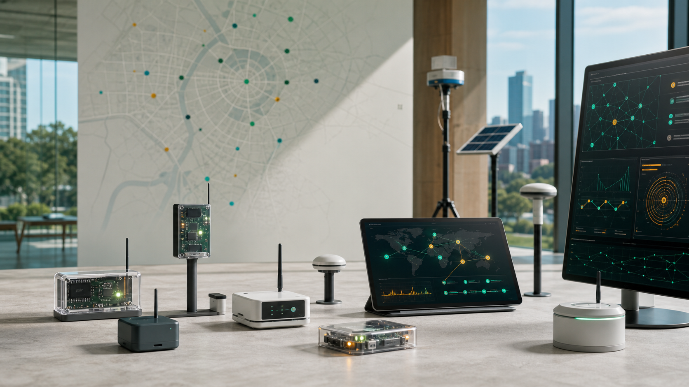
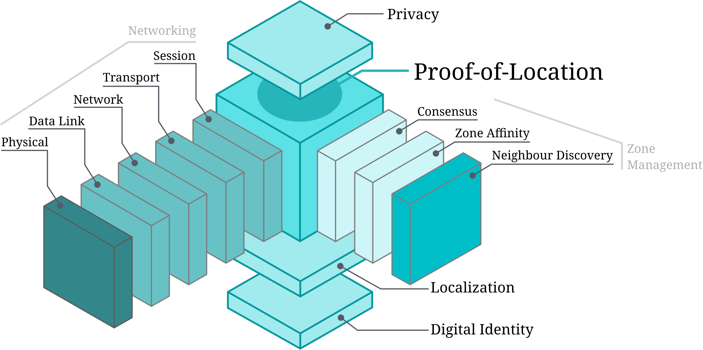

Presence
Independent witnesses attest that a prover was inside a bounded place at a bounded time.

Open proof-of-location infrastructure
A public home for ideas, protocols, and open-source work around verifiable claims about where and when physical events happened.
Digital systems increasingly depend on claims about the physical world: where a record was created, what context surrounded an observation, and whether the same claim can be checked later. Today those claims often arrive as weak metadata, platform trust, GNSS coordinates, device signatures, or post-hoc forensic guesses.
Open PoL treats location as a verifiable digital primitive. The goal is to make place, time, and capture context inspectable, contestable, and reusable across public-interest systems.
Independent witnesses attest that a prover was inside a bounded place at a bounded time.
Local signals and policy checks add evidence about the environment around a claim.
Evidence records bind content, telemetry, or decisions to their capture-time assumptions.
Anyone with the evidence object and verifier can inspect what was proven and what was not.
Proof-of-Location systems move trust away from the capture device alone. A witness zone can combine ranging, local networking, identity, policies, sensor commitments, and signed evidence records so a verifier can reason about a real-world claim.
The device or actor asking for a claim to be witnessed.
Independent local nodes that check place, time, signal, and policy assumptions.
A signed, referenceable record binding a claim to proof material and disclosure choices.
Software that checks signatures, policies, freshness, quorum, and assurance limits.
The core thesis work frames Proof-of-Location as a layered system that sits alongside networking, zone management, localization, consensus, identity, and privacy. That framing matters for Open PoL because capture-time provenance needs a full protocol stack, not a coordinate field.
This figure is carried in from the thesis assets as the first public visual anchor for the project.

Trust should come from reviewable protocols, evidence formats, and implementations.
Useful proof should not mean publishing raw movement traces or unnecessary sensor data.
Distance fraud, replay, stale claims, staged scenes, and screen replay are first-class tests.
PoL evidence should be referenceable by provenance, credential, audit, and policy systems.
Open PoL builds on work around decentralized Proof-of-Location systems, privacy-preserving compliance, location-data provenance risks, and capture-time content provenance.
The next outputs should make the idea runnable: reference code, hardware notes, evidence schemas, policies, verifier logic, tests, and demos that show the limits as clearly as the capabilities.
GitHub repository